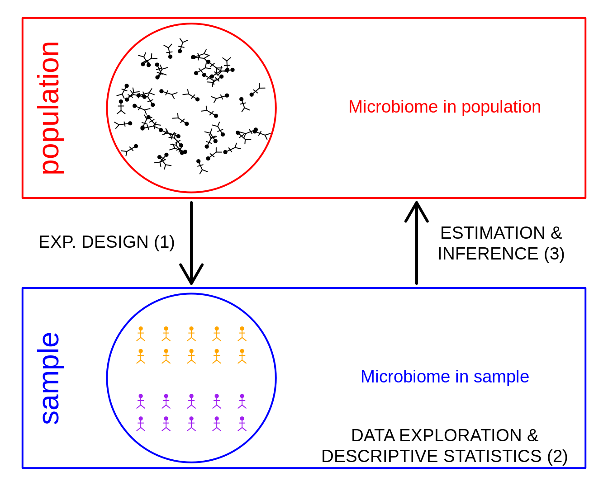
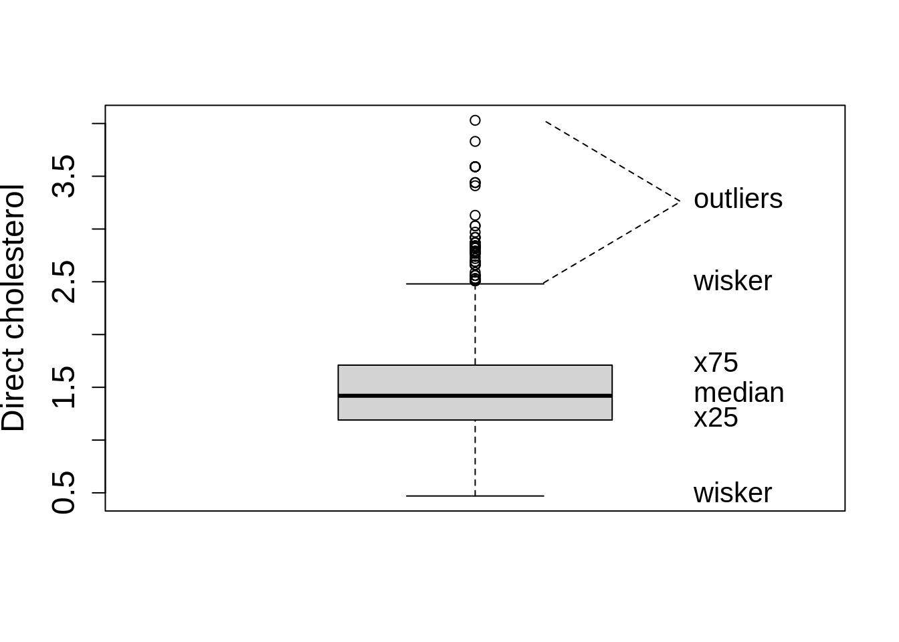
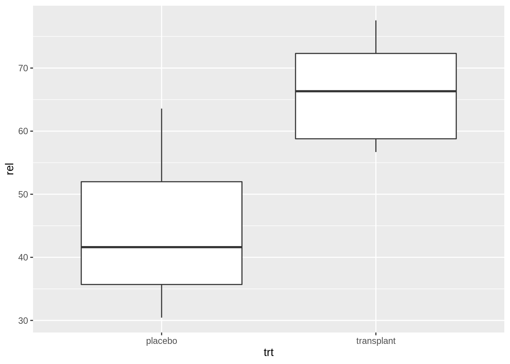
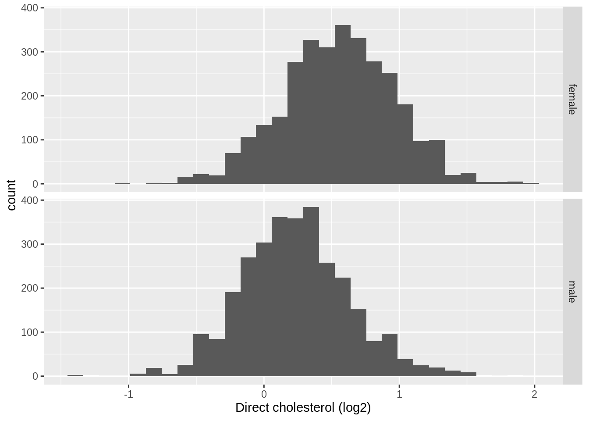
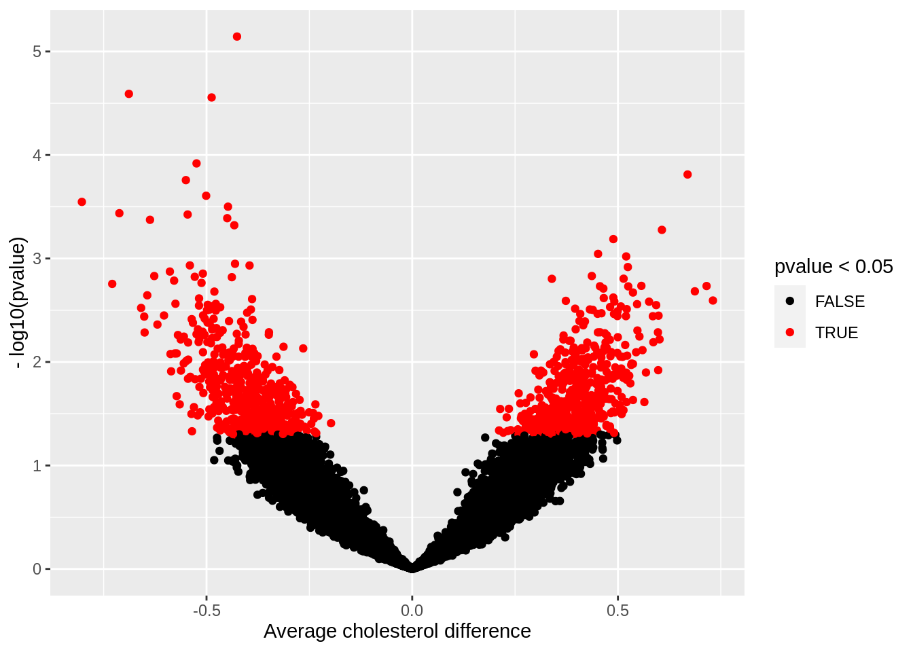
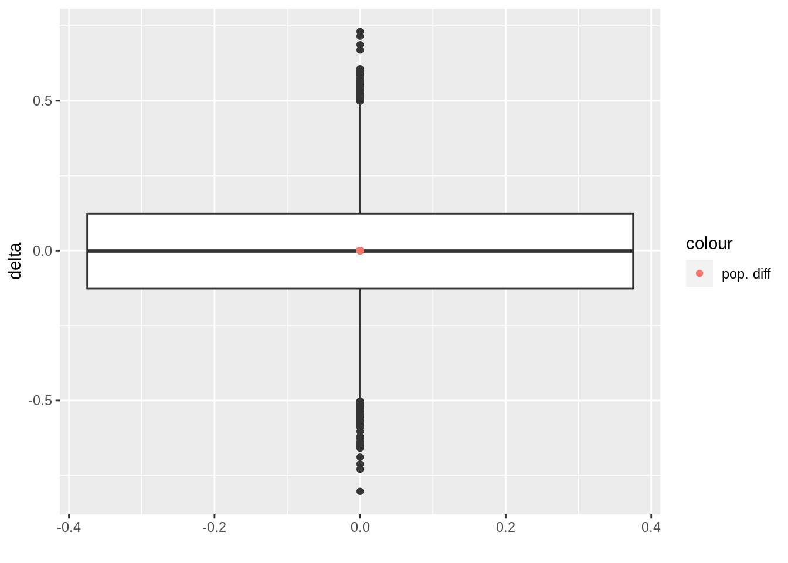

1. Introduction: Why do we need statistics
Lieven Clement
statOmics, Ghent University (https://statomics.github.io)
1 Motivation


- We live in a big data era
- Data on location, clicks, e-commerce, social media …
- Life Sciences: measure expression of thousands of genes, proteins, … for each subject or even individual cells
- Data driven journalism
- …
Statistics is the science to learn from empirical data.
Statistical literacy is key to interpret results from scientific publications.
2 Smelly armpit example
Smelly armpits are not caused by sweat itself. The smell is caused by specific micro-organisms belonging to the group of Corynebacterium spp. that metabolise sweat. Another group of abundant bacteria are the Staphylococcus spp., these bacteria do not metabolise sweat in smelly compounds.
The CMET-groep at Ghent University does research on transplanting the armpit microbiome to save people with smelly armpits.
Proposed Therapy:
- Remove armpit-microbiome with antibiotics
- Influence armpit microbiome with microbial transplant (https://youtu.be/9RIFyqLXdVw)

Experiment:
- 20 subjects with smelly armpits are attributed to one of two treatment groups
- placebo (only antibiotics)
- transplant (antibiotics followed by microbial transplant).
- The microbiome is sampled 6 weeks upon the treatment.
- The relative abundance of Staphylococcus spp. on Corynebacterium spp. + Staphylococcus spp. in the microbiome is measured via DGGE (Denaturing Gradient Gel Electrophoresis).
2.1 Import the data
read_lines("https://raw.githubusercontent.com/GTPB/PSLS20/master/data/armpit.csv") [1] "trt,rel" "placebo,54.99207606973059"
[3] "placebo,31.84466019417476" "placebo,41.09947643979057"
[5] "placebo,59.52063914780293" "placebo,63.573407202216075"
[7] "placebo,41.48648648648649" "placebo,30.44041450777202"
[9] "placebo,42.95676429567643" "placebo,41.7391304347826"
[11] "placebo,33.896515311510036" "transplant,57.218124341412015"
[13] "transplant,72.50900360144058" "transplant,61.89258312020461"
[15] "transplant,56.690140845070424" "transplant,76"
[17] "transplant,71.7357910906298" "transplant,57.757296466973884"
[19] "transplant,65.1219512195122" "transplant,67.53424657534246"
[21] "transplant,77.55359394703657" The file is comma separated and in tidy format
ap <- read_csv("https://raw.githubusercontent.com/GTPB/PSLS20/master/data/armpit.csv")
ap2.2 Data Exploration and Descriptive Statistics
- Data exploration is extremely important to get insight in the data.
- It is often underrated and overlooked.
2.2.1 Descriptive statistics
We first summarize the data and calculate the mean, standard deviation, number of observations and standard error and store the result in an object apRelSum via apRelSum<-
- We pipe the
apdataframe to the group_by function to group the data by treatment trtgroup_by(trt) - We pipe the result to the
summarizefunction to summarize the “rel” variable and calculate the mean, standard deviation and the number of observations - We pipe the result to the
mutatefunction to make a new variable in the data framesefor which we calculate the standard error
apRelSum <- ap %>%
group_by(trt) %>%
summarize(
mean = mean(rel, na.rm = TRUE),
sd = sd(rel, na.rm = TRUE),
n = n()
) %>%
mutate(se = sd / sqrt(n))
apRelSum2.2.2 Plots
We will use ggplot2 to make our plots. With the ggplot2 library we can easily build plots by adding layers.
2.2.2.1 barplot
We pipe our summarized data to the
ggplotfunction and we select the treatment variable trt and the variable mean for plottingaes(x=trt,y=mean)We make a barplot based on this data using the
geom_barfunction. The statistic isstat="identity"because the bar height should be equal the value for the mean of the relative abundance.
apRelSum %>%
ggplot(aes(x = trt, y = mean)) +
geom_bar(stat = "identity")- Is this plot informative??
We will now add standard errors to the plot using geom_errorbar function and specify the minimum and maximum value for of the error bar, the width command is used to set the width of the error bar smaller than the width of the bar.
apRelSum %>%
ggplot(aes(x = trt, y = mean)) +
geom_bar(stat = "identity") +
geom_errorbar(aes(ymin = mean - se, ymax = mean + se), width = .2)- Is this plot informative??
2.2.2.2 boxplots
I consider barplots to be bad plots
- They are not informative
- They just visualize a two point summary of the data. It is better to do this in a table
- They use a lot of space (e.g. from zero up to the minimum relative abundance) where no data are present.
It is better to get a view on the distribution of the data. We can use a boxplot for this purpose. We first explain what a boxplot.

We will now make a boxplot for the ap data
- We pipe the
apdataframe to the ggplot command - We select the data with the command
ggplot(aes(x=trt,y=rel)) - We add a boxplot with the command
geom_boxplot()
ap %>%
ggplot(aes(x = trt, y = rel)) +
geom_boxplot()
Note, that we do not have so many observations.
It is always better to show the data as raw as possible!
We will now add the raw data to the plot.
- Note that we set the outlier.shape=NA in the geom_boxplot function because because we will add all raw data anyway.
- We add the raw data using
geom_point(position="jitter"), with the argument position=‘jitter’ we will add some random noise to the x coordinate so that we can see all data.
ap %>%
ggplot(aes(x = trt, y = rel)) +
geom_boxplot(outlier.shape = NA) +
geom_point(position = "jitter")
This is an informative plot!
We observed an effect of the transplantation on the relatieve abundantie of Staphylococcus.
Is that effect large enough to conclude that the treatment works?
2.3 Estimation and statistical inference
Induction: With statistical inference we can generalize what we observe in the sample towards the population.
The price that we have to pay: uncertainty on our conclusions!
With data we cannot prove that the treatment works
Falsification principle of Popper: With data we can only reject a hypothesis or theory.
With stats we can thus not prove that the treatment works.
But stats will allow us to falcify the opposite hypothesis: how much evidence is there in the data against the assumption that there is no effect of the treatment?
With stats we can calculate how likely it is to draw a random sample (when you would repeat the experiment) with a mean difference in relative abundance between transplant and placebo group that is at least as large as what we observed in our sample when there would be no effect of the treatment.
This probability is called a p-value.
If p is very small, it is very unlikely to observe a sample like ours by random change when there would be no effect of the treatment.
We typically compare p with 5%. If there is no effect of the treatment we will thus tolerate a probability of 5% on a false positive conclusion.
To calculate p we will have to model the data using statistical models.
In chapter 5 we will learn that we can use a two-sample t-test to generalise what we observe in the microbiome dataset towards the population.
t.test(rel ~ trt, data = ap)
Welch Two Sample t-test
data: rel by trt
t = -5.0334, df = 15.892, p-value = 0.0001249
alternative hypothesis: true difference in means between group placebo and group transplant is not equal to 0
95 percent confidence interval:
-31.62100 -12.87163
sample estimates:
mean in group placebo mean in group transplant
44.15496 66.40127 Conclusion:
We can conclude that the relative abundance of Staphylococcus in the microbiome of individuals with smelly armpits is 22.2% higher upon the transplant than upon the placebo treatment (p < 0.001).
2.4 Some concepts
What are the consequences of using a sample and randomisation?
Random sampling is closely related to the concept of the population or the scope of the study.
Based on a sample of subjects, the researchers want to come to conclusions that hold for
- all kinds of people
- only male students
Scope of the study should be well specified before the start of the study.
For the statistical analysis to be valid, it is required that the subjects are selected completely at random from the population to which we want to generalize our conclusions.
Selecting completely at random from a population implies:
- all subjects in the population should have the same probability of being selected in the sample,
- the selection of a subject in the sample should be independent from the selection of the other subjects in the sample.
The sample is thus supposed to be representative for the population, but still it is random.
What does this imply?
3 Sample to sample variability
National Health NHanes study
- Since 1960 individuals of all ages are interviewed in their homes every year
- The health examination component of the survey is conducted in a mobile examination centre (MEC).
- We will use this large study to select random subjects from the American population.
- This will help us to understand how the results of an analysis and the conclusions vary from sample to sample.
library(NHANES)
head(NHANES)glimpse(NHANES)Rows: 10,000
Columns: 76
$ ID <int> 51624, 51624, 51624, 51625, 51630, 51638, 51646, 5164…
$ SurveyYr <fct> 2009_10, 2009_10, 2009_10, 2009_10, 2009_10, 2009_10,…
$ Gender <fct> male, male, male, male, female, male, male, female, f…
$ Age <int> 34, 34, 34, 4, 49, 9, 8, 45, 45, 45, 66, 58, 54, 10, …
$ AgeDecade <fct> 30-39, 30-39, 30-39, 0-9, 40-49, 0-9, 0-9, 40…
$ AgeMonths <int> 409, 409, 409, 49, 596, 115, 101, 541, 541, 541, 795,…
$ Race1 <fct> White, White, White, Other, White, White, White, Whit…
$ Race3 <fct> NA, NA, NA, NA, NA, NA, NA, NA, NA, NA, NA, NA, NA, N…
$ Education <fct> High School, High School, High School, NA, Some Colle…
$ MaritalStatus <fct> Married, Married, Married, NA, LivePartner, NA, NA, M…
$ HHIncome <fct> 25000-34999, 25000-34999, 25000-34999, 20000-24999, 3…
$ HHIncomeMid <int> 30000, 30000, 30000, 22500, 40000, 87500, 60000, 8750…
$ Poverty <dbl> 1.36, 1.36, 1.36, 1.07, 1.91, 1.84, 2.33, 5.00, 5.00,…
$ HomeRooms <int> 6, 6, 6, 9, 5, 6, 7, 6, 6, 6, 5, 10, 6, 10, 10, 4, 3,…
$ HomeOwn <fct> Own, Own, Own, Own, Rent, Rent, Own, Own, Own, Own, O…
$ Work <fct> NotWorking, NotWorking, NotWorking, NA, NotWorking, N…
$ Weight <dbl> 87.4, 87.4, 87.4, 17.0, 86.7, 29.8, 35.2, 75.7, 75.7,…
$ Length <dbl> NA, NA, NA, NA, NA, NA, NA, NA, NA, NA, NA, NA, NA, N…
$ HeadCirc <dbl> NA, NA, NA, NA, NA, NA, NA, NA, NA, NA, NA, NA, NA, N…
$ Height <dbl> 164.7, 164.7, 164.7, 105.4, 168.4, 133.1, 130.6, 166.…
$ BMI <dbl> 32.22, 32.22, 32.22, 15.30, 30.57, 16.82, 20.64, 27.2…
$ BMICatUnder20yrs <fct> NA, NA, NA, NA, NA, NA, NA, NA, NA, NA, NA, NA, NA, N…
$ BMI_WHO <fct> 30.0_plus, 30.0_plus, 30.0_plus, 12.0_18.5, 30.0_plus…
$ Pulse <int> 70, 70, 70, NA, 86, 82, 72, 62, 62, 62, 60, 62, 76, 8…
$ BPSysAve <int> 113, 113, 113, NA, 112, 86, 107, 118, 118, 118, 111, …
$ BPDiaAve <int> 85, 85, 85, NA, 75, 47, 37, 64, 64, 64, 63, 74, 85, 6…
$ BPSys1 <int> 114, 114, 114, NA, 118, 84, 114, 106, 106, 106, 124, …
$ BPDia1 <int> 88, 88, 88, NA, 82, 50, 46, 62, 62, 62, 64, 76, 86, 6…
$ BPSys2 <int> 114, 114, 114, NA, 108, 84, 108, 118, 118, 118, 108, …
$ BPDia2 <int> 88, 88, 88, NA, 74, 50, 36, 68, 68, 68, 62, 72, 88, 6…
$ BPSys3 <int> 112, 112, 112, NA, 116, 88, 106, 118, 118, 118, 114, …
$ BPDia3 <int> 82, 82, 82, NA, 76, 44, 38, 60, 60, 60, 64, 76, 82, 7…
$ Testosterone <dbl> NA, NA, NA, NA, NA, NA, NA, NA, NA, NA, NA, NA, NA, N…
$ DirectChol <dbl> 1.29, 1.29, 1.29, NA, 1.16, 1.34, 1.55, 2.12, 2.12, 2…
$ TotChol <dbl> 3.49, 3.49, 3.49, NA, 6.70, 4.86, 4.09, 5.82, 5.82, 5…
$ UrineVol1 <int> 352, 352, 352, NA, 77, 123, 238, 106, 106, 106, 113, …
$ UrineFlow1 <dbl> NA, NA, NA, NA, 0.094, 1.538, 1.322, 1.116, 1.116, 1.…
$ UrineVol2 <int> NA, NA, NA, NA, NA, NA, NA, NA, NA, NA, NA, NA, NA, N…
$ UrineFlow2 <dbl> NA, NA, NA, NA, NA, NA, NA, NA, NA, NA, NA, NA, NA, N…
$ Diabetes <fct> No, No, No, No, No, No, No, No, No, No, No, No, No, N…
$ DiabetesAge <int> NA, NA, NA, NA, NA, NA, NA, NA, NA, NA, NA, NA, NA, N…
$ HealthGen <fct> Good, Good, Good, NA, Good, NA, NA, Vgood, Vgood, Vgo…
$ DaysPhysHlthBad <int> 0, 0, 0, NA, 0, NA, NA, 0, 0, 0, 10, 0, 4, NA, NA, 0,…
$ DaysMentHlthBad <int> 15, 15, 15, NA, 10, NA, NA, 3, 3, 3, 0, 0, 0, NA, NA,…
$ LittleInterest <fct> Most, Most, Most, NA, Several, NA, NA, None, None, No…
$ Depressed <fct> Several, Several, Several, NA, Several, NA, NA, None,…
$ nPregnancies <int> NA, NA, NA, NA, 2, NA, NA, 1, 1, 1, NA, NA, NA, NA, N…
$ nBabies <int> NA, NA, NA, NA, 2, NA, NA, NA, NA, NA, NA, NA, NA, NA…
$ Age1stBaby <int> NA, NA, NA, NA, 27, NA, NA, NA, NA, NA, NA, NA, NA, N…
$ SleepHrsNight <int> 4, 4, 4, NA, 8, NA, NA, 8, 8, 8, 7, 5, 4, NA, 5, 7, N…
$ SleepTrouble <fct> Yes, Yes, Yes, NA, Yes, NA, NA, No, No, No, No, No, Y…
$ PhysActive <fct> No, No, No, NA, No, NA, NA, Yes, Yes, Yes, Yes, Yes, …
$ PhysActiveDays <int> NA, NA, NA, NA, NA, NA, NA, 5, 5, 5, 7, 5, 1, NA, 2, …
$ TVHrsDay <fct> NA, NA, NA, NA, NA, NA, NA, NA, NA, NA, NA, NA, NA, N…
$ CompHrsDay <fct> NA, NA, NA, NA, NA, NA, NA, NA, NA, NA, NA, NA, NA, N…
$ TVHrsDayChild <int> NA, NA, NA, 4, NA, 5, 1, NA, NA, NA, NA, NA, NA, 4, N…
$ CompHrsDayChild <int> NA, NA, NA, 1, NA, 0, 6, NA, NA, NA, NA, NA, NA, 3, N…
$ Alcohol12PlusYr <fct> Yes, Yes, Yes, NA, Yes, NA, NA, Yes, Yes, Yes, Yes, Y…
$ AlcoholDay <int> NA, NA, NA, NA, 2, NA, NA, 3, 3, 3, 1, 2, 6, NA, NA, …
$ AlcoholYear <int> 0, 0, 0, NA, 20, NA, NA, 52, 52, 52, 100, 104, 364, N…
$ SmokeNow <fct> No, No, No, NA, Yes, NA, NA, NA, NA, NA, No, NA, NA, …
$ Smoke100 <fct> Yes, Yes, Yes, NA, Yes, NA, NA, No, No, No, Yes, No, …
$ Smoke100n <fct> Smoker, Smoker, Smoker, NA, Smoker, NA, NA, Non-Smoke…
$ SmokeAge <int> 18, 18, 18, NA, 38, NA, NA, NA, NA, NA, 13, NA, NA, N…
$ Marijuana <fct> Yes, Yes, Yes, NA, Yes, NA, NA, Yes, Yes, Yes, NA, Ye…
$ AgeFirstMarij <int> 17, 17, 17, NA, 18, NA, NA, 13, 13, 13, NA, 19, 15, N…
$ RegularMarij <fct> No, No, No, NA, No, NA, NA, No, No, No, NA, Yes, Yes,…
$ AgeRegMarij <int> NA, NA, NA, NA, NA, NA, NA, NA, NA, NA, NA, 20, 15, N…
$ HardDrugs <fct> Yes, Yes, Yes, NA, Yes, NA, NA, No, No, No, No, Yes, …
$ SexEver <fct> Yes, Yes, Yes, NA, Yes, NA, NA, Yes, Yes, Yes, Yes, Y…
$ SexAge <int> 16, 16, 16, NA, 12, NA, NA, 13, 13, 13, 17, 22, 12, N…
$ SexNumPartnLife <int> 8, 8, 8, NA, 10, NA, NA, 20, 20, 20, 15, 7, 100, NA, …
$ SexNumPartYear <int> 1, 1, 1, NA, 1, NA, NA, 0, 0, 0, NA, 1, 1, NA, NA, 1,…
$ SameSex <fct> No, No, No, NA, Yes, NA, NA, Yes, Yes, Yes, No, No, N…
$ SexOrientation <fct> Heterosexual, Heterosexual, Heterosexual, NA, Heteros…
$ PregnantNow <fct> NA, NA, NA, NA, NA, NA, NA, NA, NA, NA, NA, NA, NA, N…3.1 Data exploration
Suppose that we are interested in assessing the difference in direct cholesterol levels between males and females older than 25 years.
- We pipe the dataset to the function
filterto filter the data according to age. - We plot the direct cholesterol levels.
- We select the data with the command
ggplot(aes(x=DirectChol)) - We add a histogram with the command
geom_histogram() - We make to vertical panels using the command
facet_grid(Gender~.) - We customize the label of the x-axis with the
xlabcommand.
- We select the data with the command
NHANES %>%
filter(Age > 25) %>%
ggplot(aes(x = DirectChol)) +
geom_histogram() +
facet_grid(Gender ~ .) +
xlab("Direct cholesterol (mg/dl)")- Cholesterol levels and concentration measurements are often skewed.
- Concentrations cannot be lower than 0.
- They are often log transformed.
NHANES %>%
filter(Age > 25) %>%
ggplot(aes(x = DirectChol %>% log2())) +
geom_histogram() +
facet_grid(Gender ~ .) +
xlab("Direct cholesterol (log2)")
We see that the data are more or less bell shaped upon log transformation.
We will now create a subset of the data that we will use to sample from in the next sections.
- We filter on age and remove subjects with missing values (NA).
- We only select the variables Gender and DirectChol from the dataset to avoid unnecessary variables.
- With the mutate function we can add a new variable logChol with log transformed direct cholesterol levels.
nhanesSub <- NHANES %>%
filter(Age > 25 & !is.na(DirectChol)) %>%
select(c("Gender", "DirectChol")) %>%
mutate(cholLog = log2(DirectChol))We will calculate the summary statistics for the cholLog variable for males and females in the large dataset. So we group by Gender
cholLogSum <- nhanesSub %>%
group_by(Gender) %>%
summarize(
mean = mean(cholLog, na.rm = TRUE),
sd = sd(cholLog, na.rm = TRUE),
n = n()
) %>%
mutate(se = sd / sqrt(n))
cholLogSum3.2 Experiment
- Suppose that we have no access to cholesterol levels of the American population,
- we will have to setup an experiment.
- Suppose we have a budget for assessing 10 females and 10 males,
- we will subset 10 females and 10 males at random from the American population and measure their direct cholesterol levels.
fem <- nhanesSub %>%
filter(Gender == "female") %>%
sample_n(size = 10)
mal <- nhanesSub %>%
filter(Gender == "male") %>%
sample_n(size = 10)
samp <- rbind(fem, mal)
sampWe will now plot the data with a histogram and boxplots
samp %>%
ggplot(aes(x = cholLog)) +
geom_histogram(binwidth = .1) +
facet_grid(Gender ~ .) +
xlab("Direct cholesterol (log2)")samp %>%
ggplot(aes(x = Gender, y = cholLog)) +
geom_boxplot(outlier.shape = NA) +
geom_point(position = "jitter")We summarize the data
samp %>%
group_by(Gender) %>%
summarize(
mean = mean(cholLog, na.rm = TRUE),
sd = sd(cholLog, na.rm = TRUE),
n = n()
) %>%
mutate(se = sd / sqrt(n))Note that the sample mean is different from that of the large experiment (“population”) we sampled from.
We test for the difference between Males and females
t.test(cholLog ~ Gender, samp, var.equal = TRUE)
Two Sample t-test
data: cholLog by Gender
t = 1.8919, df = 18, p-value = 0.0747
alternative hypothesis: true difference in means between group female and group male is not equal to 0
95 percent confidence interval:
-0.03588746 0.68570738
sample estimates:
mean in group female mean in group male
0.34776170 0.02285174 3.3 Repeat the experiment
If we do the experiment again we select other people and we obtain different results.
fem <- nhanesSub %>%
filter(Gender == "female") %>%
sample_n(size = 10)
mal <- nhanesSub %>%
filter(Gender == "male") %>%
sample_n(size = 10)
samp2 <- rbind(fem, mal)
samp2 %>%
ggplot(aes(x = DirectChol %>% log())) +
geom_histogram(binwidth = .1) +
facet_grid(Gender ~ .) +
xlab("Direct cholesterol (log)")samp2 %>%
ggplot(aes(x = Gender, y = cholLog)) +
geom_boxplot(outlier.shape = NA) +
geom_point(position = "jitter")samp2 %>%
group_by(Gender) %>%
summarize(
mean = mean(cholLog, na.rm = TRUE),
sd = sd(cholLog, na.rm = TRUE),
n = n()
) %>%
mutate(se = sd / sqrt(n))t.test(cholLog ~ Gender, samp2, var.equal = TRUE)
Two Sample t-test
data: cholLog by Gender
t = 1.7522, df = 18, p-value = 0.09675
alternative hypothesis: true difference in means between group female and group male is not equal to 0
95 percent confidence interval:
-0.07604904 0.84039821
sample estimates:
mean in group female mean in group male
0.6420087 0.2598341 3.4 And again
set.seed(12857)
fem <- nhanesSub %>%
filter(Gender == "female") %>%
sample_n(size = 10)
mal <- nhanesSub %>%
filter(Gender == "male") %>%
sample_n(size = 10)
samp3 <- rbind(fem, mal)
samp3 %>%
ggplot(aes(x = DirectChol %>% log())) +
geom_histogram(binwidth = .1) +
facet_grid(Gender ~ .) +
xlab("Direct cholesterol (log)")samp3 %>%
ggplot(aes(x = Gender, y = cholLog)) +
geom_boxplot(outlier.shape = NA) +
geom_point(position = "jitter")samp3 %>%
group_by(Gender) %>%
summarize(
mean = mean(cholLog, na.rm = TRUE),
sd = sd(cholLog, na.rm = TRUE),
n = n()
) %>%
mutate(se = sd / sqrt(n))t.test(cholLog ~ Gender, samp3, var.equal = TRUE)
Two Sample t-test
data: cholLog by Gender
t = -2.4449, df = 18, p-value = 0.02501
alternative hypothesis: true difference in means between group female and group male is not equal to 0
95 percent confidence interval:
-0.7049891 -0.0533427
sample estimates:
mean in group female mean in group male
0.2585913 0.6377572 3.5 Summary
Because we sampled other subjects in each sample, we obtain different cholesterol levels.
However, not only the cholesterol levels differ from sample to sample but also the summary statistics: means, standard deviations and standard errors.
Note, that in the last sample the log cholesterol levels are on average lower for females than for males; based on this sample we even would wrongly conclude that the cholesterol levels for females are on average larger than those of males.
This implies that our conclusions are also subjected to uncertainty and might change from sample to sample.
Samples as the one where the effect swaps and is statistically significant, however, are very rare.
This is illustrated with the code below, where we will draw 20000 repeated samples with sample size 10 for females and males from the NHanes study.
nsim <- 20000
nSamp <- 10
res <- matrix(0, nrow = nsim, ncol = 2)
fem <- nhanesSub %>% filter(Gender == "female")
mal <- nhanesSub %>% filter(Gender == "male")
for (i in 1:nsim)
{
femSamp <- sample(fem$cholLog, nSamp)
malSamp <- sample(mal$cholLog, nSamp)
meanFem <- mean(femSamp)
meanMal <- mean(malSamp)
delta <- meanFem - meanMal
sdFem <- sd(femSamp)
sdMal <- sd(malSamp)
seFem <- sdFem / sqrt(nSamp)
seFem <- sdFem / sqrt(nSamp)
sdPool <- sqrt((sdFem^2 * (nSamp - 1) + sdMal^2 * (nSamp - 1)) / (2 * nSamp - 2))
tvalue <- (delta) / (sdPool * sqrt(1 / nSamp + 1 / nSamp))
pvalue <- pt(abs(tvalue), lower.tail = FALSE, df = 2 * nSamp - 2) * 2
res[i, ] <- c(delta, pvalue)
}
sum(res[, 2] < 0.05 & res[, 1] > 0)[1] 7785sum(res[, 2] > 0.05)[1] 12212sum(res[, 2] < 0.05 & res[, 1] < 0)[1] 3res <- res %>% as.data.frame()
names(res) <- c("delta", "pvalue")
res %>%
ggplot(aes(x = delta, y = -log10(pvalue), color = pvalue < 0.05)) +
geom_point() +
xlab("Average cholesterol difference") +
ylab("- log10(pvalue)") +
scale_color_manual(values = c("black", "red"))res %>%
ggplot(aes(y = delta)) +
geom_boxplot() +
geom_point(aes(x = 0, y = c(mean(fem$cholLog) - mean(mal$cholLog)), color = "pop. diff")) +
xlab("")Only in 3 out of 20000 samples we conclude that the mean cholesterol level of males is significantly lower than for females. For the remaining samples the cholesterol levels for males were on average significantly lower than for females (7785 samples) or the average difference in cholesterol levels were not statistically significant (12212 samples). The latter is because the power is rather low to detect the difference with 10 samples in each group.
3.6 Assignment
- Copy the code chunk with the simulation study
- Add it here below
- Modify the sample size to 50.
- What do you observe?
3.7 Control of false positives
Wat happens when there is no difference between both groups?
We will have to simulate experiments for which the cholestorol levels are the same for both groups.
We can do this by sampling data for both groups from the subset of women in the study.
We do this again for 10 subjects per group
nsim <- 20000
nSamp <- 10
res <- matrix(0, nrow = nsim, ncol = 2)
fem <- nhanesSub %>% filter(Gender == "female")
mal <- nhanesSub %>% filter(Gender == "male")
for (i in 1:nsim)
{
femSamp <- sample(fem$cholLog, nSamp)
fem2Samp <- sample(fem$cholLog, nSamp)
meanFem <- mean(femSamp)
meanFem2 <- mean(fem2Samp)
delta <- meanFem - meanFem2
sdFem <- sd(femSamp)
sdFem2 <- sd(fem2Samp)
seFem <- sdFem / sqrt(nSamp)
seFem <- sdFem2 / sqrt(nSamp)
sdPool <- sqrt((sdFem^2 * (nSamp - 1) + sdFem2^2 * (nSamp - 1)) / (2 * nSamp - 2))
tvalue <- (delta) / (sdPool * sqrt(1 / nSamp + 1 / nSamp))
pvalue <- pt(abs(tvalue), lower.tail = FALSE, df = 2 * nSamp - 2) * 2
res[i, ] <- c(delta, pvalue)
}
sum(res[, 2] < 0.05 & res[, 1] > 0)[1] 480sum(res[, 2] >= 0.05)[1] 18960sum(res[, 2] < 0.05 & res[, 1] < 0)[1] 560res <- res %>% as.data.frame()
names(res) <- c("delta", "pvalue")
res %>%
ggplot(aes(x = delta, y = -log10(pvalue), color = pvalue < 0.05)) +
geom_point() +
xlab("Average cholesterol difference") +
ylab("- log10(pvalue)") +
scale_color_manual(values = c("black", "red"))
res %>%
ggplot(aes(y = delta)) +
geom_boxplot() +
geom_point(aes(x = 0, y = 0, color = "pop. diff")) +
xlab("")
Note, that the number of false positives are on 1040 on 20000 experiments and are nicely controlled at the 5% level.
What happens if we increase the sample size to 50 subjects per group?
4 Salk Study
- In 1916, the US experienced the first large epidemic of polio.
- John Salk developed a vaccine with promising results in the lab in the early fifties.
- In 1954, the National Foundation for Infantile Paralysis (NFIP) has setup a large study to assess the effectiveness of the Salk vaccine.
- Suppose that the NFIP would have vaccinated a large number of children in 1954 and would have observed that the polio incidence in 1954 was lower than in 1953. Could they have concluded that the vaccine was effective?
4.1 NFIP Study
4.1.1 Design
- Large simultaneous study with cases, vaccinated children, and controls, non-vaccinated children.
- All schools in districts with high polio incidence
- Cases: children with consent for vaccination from second grade of primary school.
- Controls: children from first and third grade.
4.1.2 Data
nfip <- data.frame(group = c("cases", "control", "noConcent"), grade = c("g2", "g1g3", "g2"), vaccin = c("yes", "no", "no"), total = c(221998, 725173, 123605), polio = c(54, 391, 56))
nfip$noPolio <- nfip$total - nfip$polio
knitr::kable(nfip)| group | grade | vaccin | total | polio | noPolio |
|---|---|---|---|---|---|
| cases | g2 | yes | 221998 | 54 | 221944 |
| control | g1g3 | no | 725173 | 391 | 724782 |
| noConcent | g2 | no | 123605 | 56 | 123549 |
Compare polio incidence?
What can we conclude?
4.2 Confounding
We observe a lower polio (P) incidence for children for who no consent was given than for the children in the control group.
Consent for vaccination (V) was associated with the socio-economic status (S).
Children of lower socio-economic status were more resistant to the disease.
The groups of cases and controls are not comparable:
- difference in age,
- difference in socio-economic status and
- difference in susceptible for disease.
4.3 Salk Study
4.3.1 Design
A new study was conducted: Randomized double blind study
- Children are assigned at random to the control or case treatment arm after consent was given by the parents.
- Control: vaccination with placebo
- Treatment: vaccination with vaccine
- double blinding:
- parents did not know if their child was vaccinated or received the placebo
- care-giver/researchers did not know if the child was vaccinated or received placebo
4.3.2 Data
salk <- data.frame(group = c("cases", "control", "noConcent"), treatment = c("vaccine", "placebo", "none"), total = c(
200745,
201229, 338778
), polio = c(57, 142, 157))
salk$noPolio <- salk$total - salk$polio
salk$incidencePM <- round(salk$polio / salk$total * 1e6, 0)
knitr::kable(salk)| group | treatment | total | polio | noPolio | incidencePM |
|---|---|---|---|---|---|
| cases | vaccine | 200745 | 57 | 200688 | 284 |
| control | placebo | 201229 | 142 | 201087 | 706 |
| noConcent | none | 338778 | 157 | 338621 | 463 |
We observe a much larger effect now that the cases and the controls are comparable, incidence of 284 and 706 per million, respectively.
The polio incidence for children with no consent remains similar, and 463 per million in the NFIP and Salk study, respectively.
5 Role of Statistics in the Life Sciences
- We have seen that
- it is important to carefully specify the scope of the study before the experiment,
- the sample size matters,
- we should be aware of confounding, and
- a proper control is required.
\(\rightarrow\) Good experimental design is crucial!
We also observed that there is variability in the population and because we can only sample a small part of the population our results and conclusions are subjected to uncertainty.
Statistics is the science on
- collecting (experimental design),
- exploring (data exploration) and
- learning from data and to generalize what we observe in the sample towards the population while quantifying, controlling and reporting variability and uncertainty (statistical modelling and statistical inference).
Therefore, statistics plays an important role in almost all sciences (e.g. column “points of significance” in Nature Methods. http://blogs.nature.com/methagora/2013/08/giving_statistics_the_attention_it_deserves.html)